一、Serverless是什么
Serverless ，按中文翻译，称为「无服务器」。
这究竟是一种什么样的形态或产品呢？无服务器，就是真的没有服务器吗？
实际并不是没有服务器，只是用户只是不用更多的去考虑服务器的相关内容了，无需再去考虑服务器的规格大小、存储类型、网络带宽、自动扩缩容的问题。
二、Serverless的发展
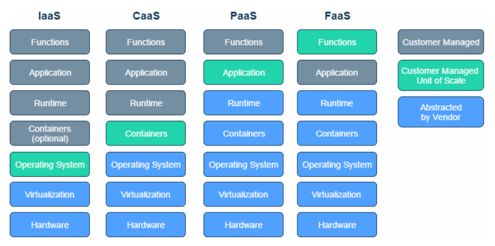
Serverless通常是指FaaS和BaaS：
Functions-as-a-Service (FaaS) ，通常提供事件驱动计算。开发人员使用由事件或HTTP请求触发的function来运行和管理应用程序代码。
Backend-as-a-Service (BaaS) ，它是基于API的第三方服务，可替代应用程序中的核心功能子集。例如数据库、对象存储等第三方服务。
三、Serverless的技术特点：
1、事件驱动
- 云函数的运行，是由事件驱动起来的，在有事件到来时，云函数会启动运行
- Serverless 应用不会类似于原有的「监听 - 处理」类型的应用一直在线，而是按需启动
- 事件的定义可以很丰富，一次 http 请求，一个文件上传，一次数据库条目修改，一条消息发送，都可以定义为事件
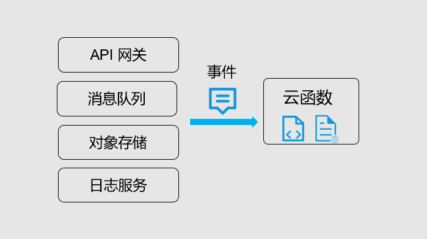
2、单事件处理
- 云函数由事件触发，而触发启动的一个云函数实例，一次仅处理一个事件
- 无需在代码内考虑高并发高可靠性，代码可以专注于业务，开发更简单
- 通过云函数实例的高并发能力，实现业务高并发
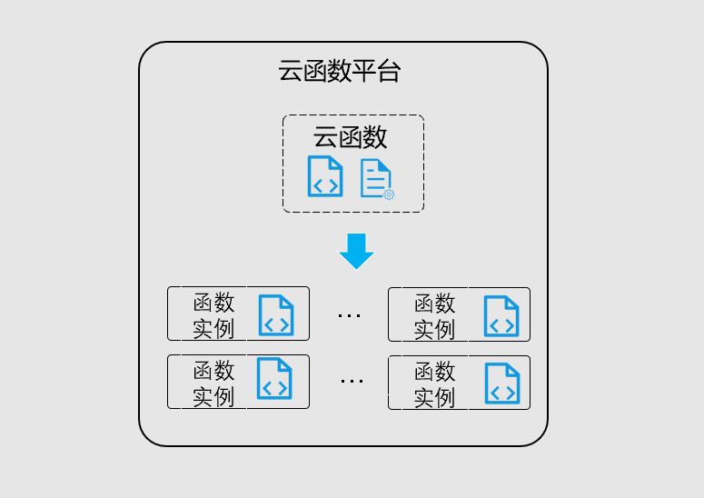
3、自动弹性伸缩
- 由于云函数事件驱动及单事件处理的特性，云函数通过自动的伸缩来支持业务的高并发
- 针对业务的实际事件或请求数，云函数自动弹性合适的处理实例来承载实际业务量
- 在没有事件或请求时，无实例运行，不占用资源
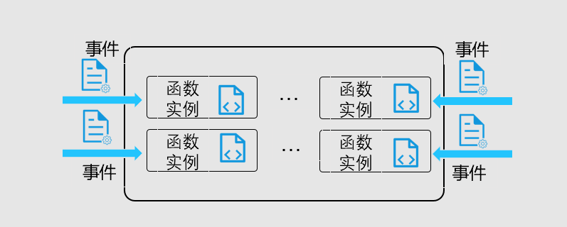
4、无状态开发
- 云函数运行时根据业务弹性，可能伸缩到 0，无法在运行环境中保存状态数据
- 分布式应用开发中，均需要保持应用的无状态，以便于水平伸缩
- 可以利用外部服务、产品，例如数据库或缓存，实现状态数据的保存
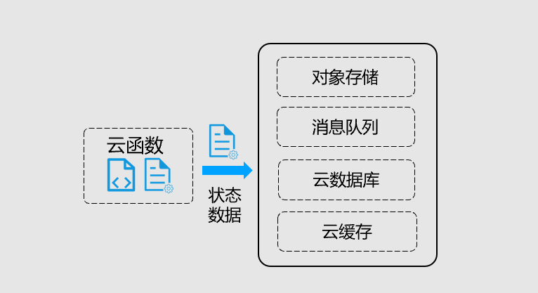
四、业界的Serverless产品
1、谷歌云 function
GoogleCloud function产品优势介绍
利用可伸缩的函数即服务 (FaaS) 运行代码，随用随付，并且无需执行任何服务器管理工作。
- 不必预配、管理或升级服务器
- 根据负载自动扩缩
- 集成式监控、日志记录和调试功能
- 基于最小权限原则的角色和函数级别的内置安全性
- 适用于混合云和多云端方案的关键网络功能
GoogleCloud产品界面
- 函数列表
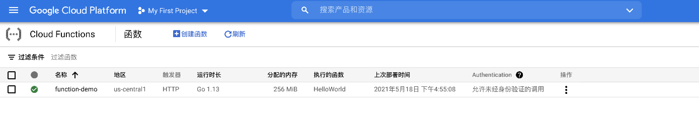 - 创建函数，配置HTTP触发器暴露对应的函数
2、AWS
AWS拥有和Google function类似的产品，叫做lambda.
- lambda函数列表
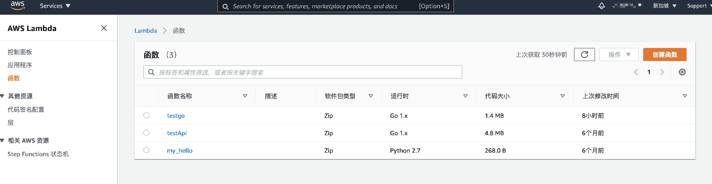 - 配置HTTP触发器暴lambda露函数
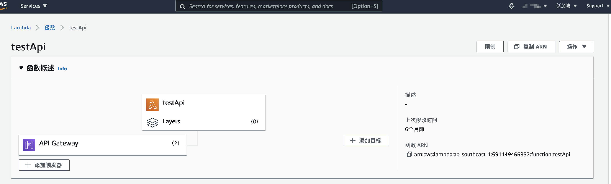
3、阿里云
阿里云也有自己的Serverless产品，分别是函数计算和Serverless工作流，函数计算和Google的function，AWS的lambda基本一样，不多做介绍了。
下边看一下Serverless工作流这个产品。
在Serverless工作流中，用户可以通过yaml来编排函数，事件会按照工作流的定义，流转工作流中的服务，以实现一定的业务逻辑，创建页面如下图
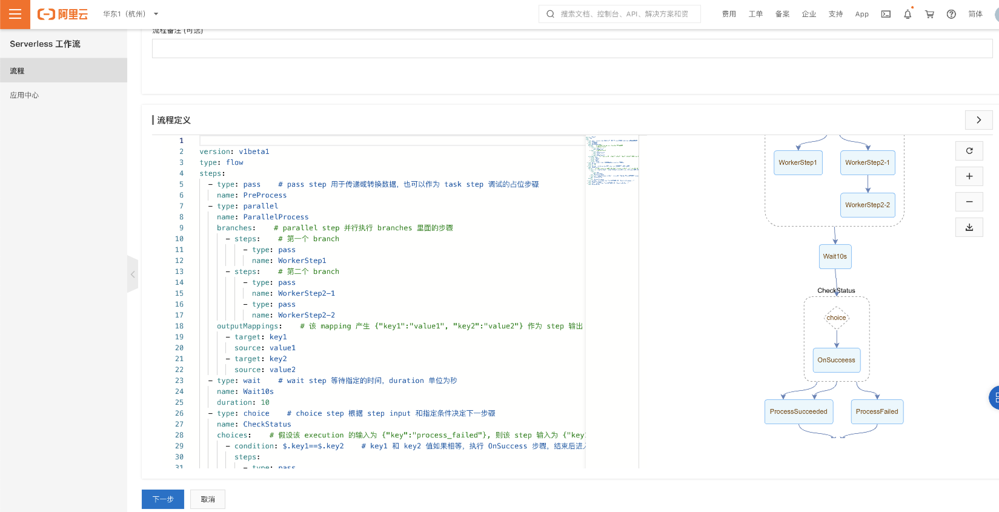
4、海尔PSI
我们PSI也有一款Serverless产品，目前已上线事件驱动流程功能，配合工单通知业务，已落地生产。
同步函数计算功能，正在迭代中，近期就会上线，敬请期待。
- 产品主界面：
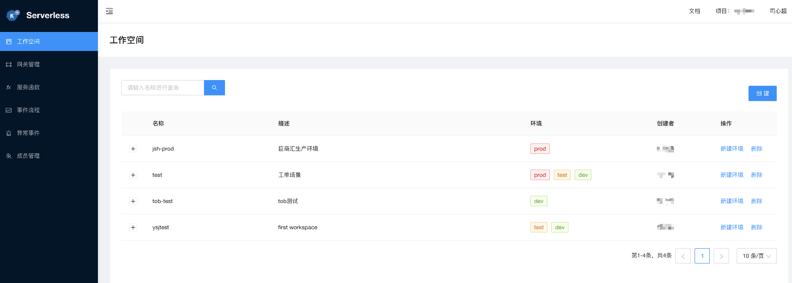
- 事件流程界面：
事件流程通过流程图的形式编排服务，更加直观、易懂。
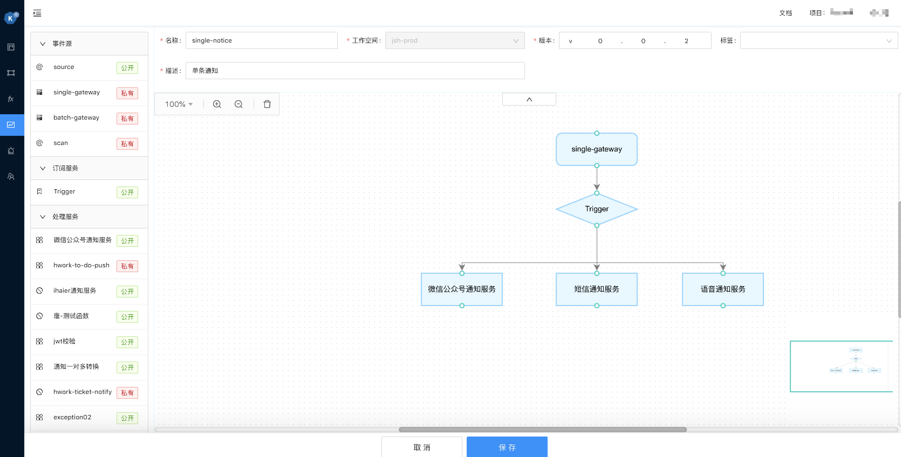
PSI Serverless产品体验地址：https://edgy.haier.net
PSI Serverless产品文档地址：https://edgy.haier.net/doc